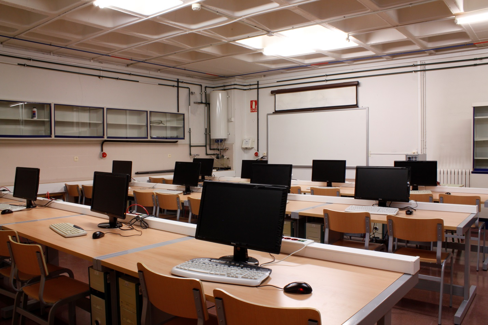

Explora y accede a nuestros servicios académicos
Usa el buscador para encontrar un servicio, navega por las secciones y entra directamente al que necesites.
Biblioteca Virtual
Accede a libros digitales, revistas cientificas y recursos academicos en linea para apoyar tu aprendizaje.
- Consulta de material digital
- Apoyo para investigaciones
- Recursos de estudio 24/7

Laboratorios
Realiza practicas en espacios equipados con tecnologia moderna para fortalecer tus competencias profesionales.
- Practicas guiadas
- Equipos especializados
- Entornos de aprendizaje seguro
Administracion de Redes
Aprende a disenar, configurar y asegurar infraestructuras de red para entornos empresariales y academicos.
- Configuracion de redes
- Monitoreo y seguridad
- Soporte tecnico especializado
Biblioteca Virtual
Ingresa al catálogo digital, consulta documentos y encuentra material de estudio para tus asignaturas.
Laboratorios
Revisa disponibilidad, practica con equipos y organiza sesiones de aprendizaje aplicado.
Administracion de Redes
Gestiona infraestructura, visualiza topologias y solicita apoyo para conectividad y soporte.
¿Dónde solicitar estos servicios?
Acude a la ventanilla de atención de la Facultad o a la Secretaría Académica dentro del campus FISEI para pedir información, reservas y acceso a los servicios.
Si deseas, después puedo reemplazar este texto con la dirección exacta, horario y teléfono de contacto.
Atención presencial
- Secretaría Académica
- Ventanilla de atención estudiantil
- Campus FISEI